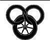

BU SÖZLÜKTEKİ TARİHLER ÜZERİNE BİR NOT: Dünyanın Kırılışı'ndan bu yana, tarihleri kaydetmeye yönelik üç farklı sistem kullanılmıştır. Bunlardan ilki, Dünyanın Kırılışı'ndan Sonraki (KS) yılları kaydetmişti. Kırılış ve Kırılış'ın hemen sonrasındaki yıllarda tam bir kaos yaşandığı için, ve takvim, Kırılış'tan ancak yüzyıl sonra kullanılmaya başlandığından, bu takvimin başlangıç noktası da varsayımsal olarak belirlenmiştir. Trolloc Savaşları'nın sonunda birçok kayıt kaybolmuş ve eski sisteme göre hangi yılda olunduğu bile unutulmuştur. Bu nedenle, Savaşlar'ın sonunu başlangıç olarak alan ve dünyanın Trolloc tehdidinden kurtuluşunu kutlayan yeni bir takvim oluşturulmuştur. Bu ikinci takvim, tüm yılları Özgür Yıl (ÖY) saymıştır. Yüzyıl Savaşı'nın neden olduğu yıkımlardan sonra, üçüncü bir takvim kullanılmaya başlanmıştır. Yeni Çağ'ı (YK) kaydeden bu takvim hâlâ kullanımdadır.
A'dam (Ey-dam): Gümüş bir kayışla birbirine bağlanan bir gerdanlık ve bilezikten oluşan ve kendi isteği dışında yönlendirebilen kadınları kontrol etmek için kullanılan bir araç. Gerdanlık damane tarafından, bilezik de sul'dam tarafından takılır. Bkz. damane; sul'dam.
Adan, Heran (Aydan, Heran): Baerlon Valisi.
Aes Sedai (Ayes Seday): Tek Güç'ü kullanan kişiler. Delilik Çağı'ndan bu yana, hayatta kalan yegâne Aes Sedailerin tümü kadındır. Yaygın olarak güvensizlik duyulan ve korkulan, hatta nefret edilen Aes Sedailerin, genellikle ulusların işlerine karıştığı düşünülür. Aynı zamanda, bu tür bağlantıların gizli tutulması gereken ülkelerde bile, Aes Sedai danışman bulundurmayan pek az hükümdar vardır. Saygı ifade eden bir unvan olarak kullanılır, örn: Sheriam Aes Sedai. Bkz. Ajah; Amyrlin Makamı.
Afet: Bkz. Büyük Afet.
Agelmar; Jagad Evi'nden Lord Agelmar (Agelmar; Cagad): Fal Dara Lordu. İşareti, koşan üç kızıl tilkidir.
Aiel: Aiel Kıraçları'nın halkı. Sert ve zorludurlar. Öldürmeden önce yüzlerine peçe takarlar. Vahşi davrananlar için kullanılan "kara peçeli Aiel gibi davranmak" deyimi buradan çıkmıştır. Silahları varken ya da çıplak ellerinden başka hiçbir şeyleri yokken ölümcül savaşçılardır, ama asla kılıçlara dokunmazlar. Gaydacıları onları savaşa dans şarkıları ile götürür ve savaşı 'Dans' olarak adlandırırlar.
Aiel Kıraçları: Dünyanın Omurgası'nın doğusunda, zorlu, engebeli, neredeyse susuz bir ülke. Oraya pek az yabancı gitmeye cesaret edebilir. Bunun tek sebebi, orada doğmamış olanlar için su bulmanın neredeyse imkânsız olması değil, aynı zamanda Aiellerin kendilerini tüm halklar ile savaş halinde saymaları ve yabancıları hoş karşılamamalarıdır.
Aiel Savaşçıları: Taş Köpekler, Kızıl Siperler ya da Mızrak Kızları gibi bir savaşçı topluluğu. Her bir savaşçı topluluğunun kendine özgü gelenekleri ve belli görevleri vardır. Örneğin Kızıl Siperler bir polis örgütü olarak çalışırlar. Taş Köpekler, bir savaş sırasında son adamları ölene kadar geri çekilmeme yemini etmiş savaşçılardır. Aiel klanları sıklıkla kendi aralarında savaşırlar, fakat aynı savaşçı topluluğuna ait kişiler, klanları savaş halinde olsa da, birbirleriyle savaşmazlar. Bu sayede, savaş halinde bile olsalar, klanlar arasında sürekli bir ilişki olur. Bkz. Aiel.
Ajah (Acah): Aes Sedailer içinde, her Aes Sedai'nin ait olduğu topluluklar. Renklerine göre ayrılır: Mavi Ajah, Kızıl Ajah, Beyaz Ajah, Yeşil Ajah, Kahverengi Ajah, Sarı Ajah ve Gri Ajah. Örneğin, Kırmızı Ajah'a ait biri tüm enerjisini Güç kullanmaya kalkışan erkekleri bulup ehlileştirmeye adar. Diğer yandan Kahverengi Ajah'a ait biri dünyevi işlerden vazgeçer ve kendini bilgi aramaya adar. Karanlık Varlık'a hizmet eden bir Kara Ajah olduğu konusunda söylentiler vardır -ama hararetle inkâr edilir ve bir Aes Sedai'nin önünde bundan söz etmek güvenli değildir-.
Al Ellisande: Eski Dil'de, "Güneşin Gülü için!"
Aldieb: Eski Dil'de, 'Batı Rüzgârı', bahar yağmurlarını getiren rüzgâr.
al'Meara, Nynaeve (al-Meera, Nayniiv): Emond Meydanı'nın Hikmeti.
al'Thor, Rand (al-Tor, Rand): İki Nehirli genç bir çiftçi ve koyun çobanı.
al'Vere, Egwene (al-Veer, Egıveyn): Emond Meydanı hancısının en küçük kızı.
Amalisa, Lady: Lord Agelmar'ın kız kardeşi.
Amyrlin Makamı (Amirlin): 1 Aes Sedailerin önderinin unvanı. Aes Sedailerin, yedi Ajah'ın her birinden üç temsilciden oluşan en yüksek kurulu olan Kule Salonu tarafından ömür boyu hizmet vermek üzere seçilir. Amyrlin Makamı, en azından teorik olarak, Aes Sedailer arasındaki, neredeyse en yüce otoritedir. Bir kral veya kraliçeye denktir. 2 Aes Sedai önderinin oturduğu taht.
Andor: İki Nehir'in içinde bulunduğu ülke. Andor işareti kırmızı fon üzerinde iki ayağı üzerinde doğrulmuş beyaz aslandır.
angreal: Tek Güç'ü yönlendirebilen herkesin, yardımsız kullanılamayacak kadar çok Güç'ü kullanabilmesini sağlayan çok nadir bir nesne. Efsaneler Çağı'ndan kalan nesneler olan angreallerin nasıl yapıldığı artık bilinmemektedir. Bkz. sa'angreal.
Arad Doman: Aryth Okyanusu'ndan bir halk.
Arafel: Sınırboyları'ndan bir ülke. Arafel'in işareti, çapraz çizgi ile bölünmüş alanda, kırmızı fon üzerinde üç beyaz gül ve beyaz fondur.Büyük Boru Avı: Valere Borusu'nun efsanevi aranışı ile ilgili hikâyeler dizisi. Trolloc Savaşları'nın bitişi ile Yüzyıl Savaşları'nın başlangıcı arasında gerçekleşmiştir. Tamamen anlatılması günler sürer.
Büyük Desen: Zaman Çarkı, Çağların Deseni'ni Büyük Desen'e dokur. Bu, geçmişi, şimdiki zamanı ve geleceği kapsayan, varoluşun ve gerçekliğin tamamıdır. Aynı zamanda Çağların Danteli olarak bilinir. Bkz. Çağın Deseni, Zaman Çarkı.
Büyük Oyun: Bkz. Daes Dae'mar.
Büyük Yılan: Zaman ve sonsuzluğun simgesi, Efsaneler Çağı'ndan önceden kalmadır, kendi kuyruğunu ısıran bir yılan ile simgelenir.
Byar, Jaret (Bayar, Jeret): Işığın Çocukları'ndan bir subay.
Caemlyn (Keymlin): Andor'un başkenti.
Cairhien (Kayriyen): Hem Dünyanın Omurgası boylarında yaşayan bir ulus, hem o ulusun başkenti. Şehir, Aiel Savaşı (YÇ 976-978) sırasında yakılmış ve talan edilmişti. Cairhien'in işareti mavi gökyüzünden oluşan bir fonun altında doğan altın rengi, çok ışınlı güneştir.
Çağların Danteli: Bkz. Çağın Deseni. Bkz. Büyük Desen.
Çağın Deseni: Zaman Çarkı, insan yaşamlarının ipliklerini belirli bir Çağın, o Çağın gerçekliğini oluşturacak Deseni'ne dokur; Çağın Danteli olarak da bilinir Bkz. ta'veren.
Cauthon, Matrim - Mat (Kouton, Metrim - Met): İki Nehir'den genç bir çiftçi.
Carai an Caldazar! (Karay an Kaldazar): Eski Dil'de, "Kızıl Kartal'ın şerefi için!" Manetherenlilerin kadim savaş çığlığı.
Carai an Ellisande!: Eski Dil'de, "Güneşin Gülü'nün şerefi için!" Manetheren'in son kralının savaş çığlığı.
Carallain: Yüzyıl Savaşı sırasında Artur Şahinkanadı'nın imparatorluğundan ayrılan bir ulus. Savaş sonrasında zayıflayan ulus, YÇ 500'den sonra tarih sahnesinden tamamen silinmiştir.
Charin, Jain (Carin, Ceyin): Bkz. Uzakgezgini, Jain.
Corenne: Eski Lisan'da 'Dönmek' ya da 'Dönüş'.
Cuendillar (Kueyndeyallar): Yürektaşı adıyla da bilinir. Bkz. Yürektaşı.
Daes Dae'mar: Büyük Oyun; Hanedanlar Oyunu olarak da bilinir. Soylu hanedanların planlarına, çevirdiği dolaplara verilen ad.
Dalgaları İzleyenler: Aryth Okyanusu'nun ötesine gönderilen Artur Şahinkanadı'nın ordularının bir gün geri geleceğine inanan ve bu nedenle Falme kentinde bekleyen bir topluluk.
Damane: Eski dilde, 'Tutsak Alınanlar'. Yönlendirebilen kadınlar, a'dam tarafından ele geçirilip, Seanchanlar tarafından birçok amaç için kullanılır. Bkz. Seanchan; a'dam; sul'dam.
Damodred, Prens Taringail (Damodred, Taringeyl): Cairhien'de bir Kraliyet Prensi. Tigraine ile evlendi, Galadredrid'in babası. Tigraine ortadan kaybolduğu ve öldü kabul edildiği zaman Morgase ile evlendi ve Elayne ile Gawyn'in babası oldu. Gizemli koşullar altında yok oldu ve uzun yıllardır öldüğü varsayılmaktadır. İşareti, iki uçlu altın bir savaş baltasıdır.
Damodred, Galadedrid Lordu: Elayne ve Gawyn'in üvey kardeşi. Sembolü, ucu aşağı bakan gümüş bir kılıçtır.
Dehşetlordları: Tek Güç kullanabilen erkek ve kadınlar arasında, Trolloc Savaşları sırasında Gölge'nin tarafına geçen ve Trolloc güçlerine komuta edenler.
Delilik Zamanı: Bkz. Dünyanın Kırılışı.
Deniz Halkı: Aryth (Arit) Okyanusu'ndaki ve Fırtınalar Denizi'ndeki adaların sakinleri. O adaların üzerinde pek az zaman harcarlar, hayatlarını gemilerde geçirirler. Deniz ticaretinin çoğu Deniz Halkı'nın gemileriyle yapılır.
Dhavol, Dhai'mon (Davol, Daymon): Bkz. Trolloclar.
Djevik, K'Shar (Çevik Kşar): Trolloc dilinde, 'Ölüm Toprağı'. Trollocların Aiel Kıraçları için kullandığı isim.
Domon, Bayie (Domon, Beyi): Serpinti'nin kaptanı.
Do Miere A'vron: Bkz. Dalgaları İzleyenler.
Dünyanın Kırılışı: Lews Therin Telamon ve Yüz Yoldaş, Karanlık Varlık'ın zindanını yeniden mühürledikleri zaman, lekeli saidinin karşı saldırısı. Zaman içinde bütün erkek Aes Sedailer çıldırdı. Tek Güç'ü artık bilinmeyen ölçüde kullanabilen bu adamlar, çılgınlıkları içinde yeryüzünün görünüşünü değiştirdiler. Büyük depremlere sebep oldular, dağ sıralarını dümdüz ettiler, yeni dağlar yükselttiler, eskiden denizin olduğu yerde kum topraklar çıkardılar, eskiden kuru toprak olan yerleri okyanusun boğmasına sebep oldular. Dünyanın çoğu kısmı, büyük ölçüde nüfussuzdu ve hayatta kalanlar rüzgârın önündeki toz zerreleri gibi saçılmıştı. Bu yıkım, hikâyelerde, efsanelerde ve Dünyanın Kırılışı'nın tarihinde hatırlanmaktadır. Bkz. Yüz Yoldaş.
Dünyanın Omurgası: Yalnızca birkaç geçidi olan, Aiel Kıraçları'nı batıdaki topraklardan ayıran yüksek bir dağ sırası.
Draghkar: Karanlık Varlık'a ait bir yaratık. İnsan bedeninin parçalarından yaratılmıştır. Bir Draghkar, yarasa kanatları olan dev bir insana benzer; çok solgun bir teni ve iri gözleri vardır. Draghkar'ın söylediği şarkı, avı kendisine çeker ve avlanan varlığını istencini baskı altına alır. 'Draghkar'ın öpücüğü ölümdür,' diye bir söz vardır. Draghkar'ın öpücüğü, kurbanın önce ruhunu, sonra da yaşamını ele geçirir.
Easar; Togita Evinden Kral Easar (Eizar, Togita): Shienar Kralı. İşareti, Shienar geleneğine göre Siyah Şahin ile birlikte Shienar işareti sayılan beyaz erkek geyiktir.
Efsaneler Çağı: Gölge Savaşı ve Dünyanın Kırılışı ile sona eren Çağ. Aes Sedailerin artık ancak düşlerde görülen harikalar yarattığı bir zaman. Bkz. Zaman Çarkı.
Ehlileştirme: Aes Sedailer tarafından, Tek Güç'ü kullanabilen erkeklerin Kaynak ile bağlantılarını kesmektir. Bu gereklidir, çünkü yönlendirmeyi öğrenebilen her erkek saidin'in kirliliği yüzünden çıldıracak ve deliliği içinde Güç ile korkunç şeyler yapacaktır. Ehlileştirilen bir adam, Gerçek Kaynak'ı hissetmeye devam eder, ama ona dokunamaz. Ehlileştirmeden önce başlayan delilik tedavi edilemez, ama durdurulabilir ve bu yeterince erken yapılırsa ölüm engellenebilir.
Ejder: Gölge Savaşı sırasında Lews Therin Telamon'un lakabı. Tüm Aes Sedaileri ele geçiren çılgınlığa kapılınca, Lews Therin kanından gelen herkesi, sevdiği herkesi öldürdü ve sonuç olarak Kardeşkatili lakabını kazandı. Artık, özellikle sebepsiz yere çevresi için tehlike oluşturanlar ya da onları tehdit edenler için, "İçine Ejder girdi," ya da "Ejder aldı," denir. Bkz. Yenidendoğan Ejder.
Ejder Dişi: Ucu üzerinde dik duran, genellikle siyah stilize işaret. Bir kapıya ya da eve çizildiği zaman, içerideki insanları kötülükle suçlamak anlamına gelir.
Elaida (Elayda): Andor Kraliçesi Morgase'e danışmanlık yapan Aes Sedai.
Elayne (İleyn): Kraliçe Morgase'in kızı, Andor Tahtı'nın Kız-veliahtı. İşareti altın zambaktır.
Else; Else Grinwell (Elz Grinvel): Caemlyn Yolu üzerinde karşılaşılan bir çiftçi kızı.
Fain, Padan (Feyn, Padan): Kışgecesi'nden hemen önce Emond Meydanı'na gelen bir çerçi.
Far Dareis Mai (Far Darayz May): Sözcük anlamı 'Mızrağın Kızları'. Aiellerin savaşçı topluluklarından biri; diğerlerinin aksine yalnızca kadınlardan oluşur. Topluluğa ait bir kız evlenemez ve çocuk taşırken savaşamaz. Bir Kız'ın doğurduğu çocuk, yetiştirmesi için bir başka kadına verilir ve çocuğun annesinin kim olduğu asla açıklanmaz. ("Sen hiçbir erkeğe, hiçbir erkek ya da çocuk sana ait olamaz. Senin sevgilin, çocuğun, hayatın, mızraktır.") Bu çocuklara büyük değer verilir, çünkü Kehanetler'e göre bir Kız'dan doğan bir çocuk, kabileleri birleştirecek, Aiellere Efsaneler Çağı'nda sahip oldukları büyüklüğü geri verecektir.
Fersah: Yaklaşık beş kilometrelik uzunluk ölçüsü.
Galad: Bkz. Damodred, Lord Galadedrid.
Galldrian su Riatin Rie: Riatin Hanedanı'ndan Galldrian. Cairhien Kralı. Bkz. Cairhien.
Gaidin: 'Savaşların Kardeşi'. Aes Sedailer tarafından, Muhafızlar için kullanılır. Bkz. Muhafız.
Gawyn (Gevin): Kraliçe Morgase'in oğlu, Elayne'in ağabeyi, Elayne tahta çıktığı zaman Kılıcın İlk Prensi olacak kişi. İşareti beyaz yabandomuzudur.
Gecenin Kızı: Bkz. Lanfear.
Gecenin Çobanı: Bkz. Karanlık Varlık.
Gerçek Kaynak: Evrenin itici gücü, Zaman Çarkı'nı çevirir. Birlikte ve aynı zamanda birbirlerine karşı çalışan eril yarı (saidin) ve dişil yarıya (saidar) bölünmüştür. Saidin'i yalnızca erkekler, saidar'ı yalnızca kadınlar kullanabilir. Delilik Zamanı'nın başlangıcında saidin Karanlık Varlık'ın dokunuşu sonucunda kirlenmiştir. Bkz. Tek Güç.
Gerçeğin Kubbesi: Işığın Çocukları'nın büyük izleyici salonu. Amadicia'nın başkenti Amador'da bulunur. Bkz. Işığın Çocukları.
Gezginler: Bkz. Tuatha'an.
Goaban: Yüzyıl Savaşı sırasında Artur Şahinkanadı'nı imparatorluğundan ayrılan bir ulus. Savaş sonrasında zayıflayan ulus, YÇ 500'den sonra tarih sahnesinden tamamen silinmiştir. Bkz. Artur Şahinkanadı; Yüzyıl Savaşı.
Gölge-adam: Bkz. Myrddraal.
Gözsüz: Bkz. Myrddraal.
Göz-yakan: Bkz. Karanlık Varlık.
Gölge Savaşı: Aynı zamanda Güç Savaşı olarak bilinir ve Efsaneler Çağı'nı bitirmiştir. Karanlık Varlık'ın özgür kılınması teşebbüsünden kısa süre sonra başlamış, tüm dünyayı sarmıştır. Savaşın anılarının bile unutulduğu bir dünyada, savaşın her yanı yeniden keşfedilmiş, Karanlık Varlık'ın dünyaya dokunuşu ile çarpıtılmış, Tek Güç silah olarak kullanılmıştır. Savaş, Karanlık Varlık'ın zindanına tekrar kapatılması ile sona ermiştir.
Güneş günü: Yaz ortasında kutlanan bir festival.
Hailene: Eski Lisan'da 'Önce Gelenler'.
Hardan: Yüzyıl Savaşı sırasında Artur Şahinkanadı'nın imparatorluğundan ayrılan, fakat çoktan unutulan bir ulus. Cairhien ve Shienar arasında bulunuyordu.
Hikmet: Köylerde, Kadın Kurulu tarafından şifa, kehanet ve sağduyu gibi yetenekleri için seçilen bir kadın. Çok büyük bir sorumluluk ve yetke pozisyonudur. Genellikle Belediye Başkanı'na denk, hatta bazı köylerde ondan üstün sayılır. Belediye Başkanı'nın aksine, ömür boyu hizmet etmek üzere seçilir ve bir Hikmet'in ölmeden görevden alınması çok nadir görülür. Geleneksel olarak neredeyse sürekli Belediye Başkanı ile anlaşmazlık halindedir. Bkz. Kadın Kurulu.
Illian: Fırtınalar Denizi kıyısında büyük bir liman, aynı adı taşıyan ulusun başkenti. Illian'ın işareti koyu yeşil fon üzerinde dokuz altın arıdır.
Ishmael: Eski Lisan'da 'Umuda İhanet Eden'. Terkedilmişlerden biri. Gölge Savaşı'ndan Karanlık Varlık'a giden Aes Sedai lideri. Bkz. Terkedilmişler.
Isırbeni: Çok küçük, neredeyse görünmez, ısırıcı bir böcek.
Işığın Çocukları: Karanlık Varlık'ın alt edilmesine ve tüm Karanlıkdostlarının yok edilmesine adanmış, katı çileci kuralları olan bir topluluk. Yüzyıl Savaşları sırasında Lothair Mantelar (Loteyr Mantılar) tarafından, sayıları gittikçe artan Karanlıkdostlarını Işık'a döndürmek için kurulan topluluk, savaş sırasında tamamen askeri bir organizasyona dönüşmüştür. İnançları son derece katıdır, gerçeği ve doğruyu yalnızca kendilerinin bildiğinden kesinlikle emindirler. Aes Sedailerden nefret ederler, onları ve onları destekleyenleri Karanlıkdostu sayarlar. Beyazpelerinliler olarak bilinirler; işaretleri beyaz fon üzerinde güneş patlamasıdır.
Ingtar; Shinowa Evi'nden Lord Ingtar (Ingtar; Şinow): Fal Dara'da Shienarlı bir savaşçı.
İkinci Akit: Bkz. On Ulus Akdi.
Kara Ajah: Bkz. Ajah.
Kızıl Ajah: Bkz. Ajah.
Kader Ağı: Belirli bir Çağın Deseni'nde, ta'veren olan bir ya da daha fazla insanın çevresinde oluşan büyük bir değişim.
Kadın Kurulu: Bir köyün kadınları tarafından seçilen, kadınların sorumluluğu sayılan alanlarda -örneğin ürünlerin ne zaman ekileceği, ne zaman hasat edileceği- karar veren bir grup kadın. Köy Kurulu ile denk otoriteye sahiptir ve sorumluluk alanları açıkça ayrılmıştır. Genellikle Köy Kurulu ile anlaşmazlık halindedir. Bkz. Köy Kurulu.
Karanlık Varlık: Shai'tan için her yörede kullanılan en yaygın isim: kötülüğün kaynağı, Yaratıcı'nın antitezi. Yaratıcı tarafından Yaratım anında Shayol Ghul'deki bir zindana kapatılmıştır; onu zindandan kurtarma teşebbüsü Gölge Savaşı'na, saidin'in kirlenmesine, Dünyanın Kırılışı'na ve Efsaneler Çağı'nın sona ermesine yol açmıştır.
Karanlık Varlık'ın ismini telaffuz etmek: Karanlık Varlık'ın gerçek ismini -Shai'tan- söylemek onun dikkatini çeker ve kaçınılmaz bir şekilde, en iyi durumda kötü talih, en kötü durumda felaket getirir. Bu yüzden pek çok örtmece isim kullanılır. Örn: Karanlık Varlık, Yalanların Babası, Kör Eden, Mezarın Efendisi, Gecenin Çobanı, Yürekbelası, Yürekdişi, Otyakan ve Yaprakkıran. Kötü talihe davetiye çıkaran biri için, "Karanlık Varlık'ın ismini telaffuz ediyor," denir.
Karanlıkdostları: Karanlık Varlık'ı takip eden ve o zindanından kurtulduğu zaman büyük güç ve ödüller elde edeceğini sanan kişiler.
Karanlığın Yüce Efendisi: Karanlıkdostlarının Karanlık Varlık için kullandıkları isim. Gerçek ismini kullanmanın küfür sayıldığına inanırlar.
Kandor: Sınırboyları'nda bir ülke. Kandor'un işareti, açık yeşil fon üzerinde şahlanan kızıl bir attır.
Kanun: Altı, dokuz ya da on iki yayı olabilen bir telli çalgı. Çekerek veya tıngırdatarak çalınır.
Kaynak'tan kesilmek: Tek Güç'ü yönlendirebilen bir kadının, bir Aes Sedai tarafından bu yeteneğinin kesilmesi. Kaynak'tan kesilen bir kadın, Gerçek Kaynak'ı hissedebilir, fakat ona dokunamaz.
Kız-veliaht: Andor tahtının halefinin unvanı. Kraliçe'nin en büyük kızı tahtta annesinin yerini alır. Hayatta olan bir kız evlat yoksa taht Kraliçe ile kan bağı olan en yakın kadın akrabaya kalır.
Kılıcın İlk Prensi: Normalde Andor Kraliçesi'nin en büyük erkek kardeşinin taşıdığı unvan. Çocukluğundan itibaren savaş zamanlarında Kraliçe'nin ordularına komuta etmek ve barış zamanlarında danışmanı olarak görev yapmak üzere eğitilir. Kraliçe'nin hayatta kalan erkek kardeşi yoksa bu göreve birisini atar.
Kinch, Hyam (Kinç, Hayam): Caemlyn Yolu'nda karşılaşılan bir çiftçi.
Köy Kurulu: Çoğu köyde köylüler tarafından seçilen ve Belediye Başkanı'nın başı çektiği bir grup erkek. Köyü ilgilendiren konularda karar almak ve karşılıklı köyleri ilgilendiren konularda başka kurullarla görüşmekle sorumludurlar. O kadar çok köyde Kadın Kurulu ile anlaşmazlık içindedirler ki, bu anlaşmazlık artık geleneksel sayılmaktadır. Bkz. Kadın Kurulu.
Lan; al'Lan Mandragoran (Len Mandragoran): Kuzeyli bir savaşçı; Moiraine'in yoldaşı.
Lanetli Topraklar: Büyük Afet'in ötesinde, Shayol Ghul'ü çevreleyen ıssız topraklar.
Lanfear: Eski Lisan'da, 'Gecenin Kızı'. Belki de Ishmael'den sonra en güçlü olan, Terkedilmişlerden biri. Diğer Terkedilmişlerden farklı olarak, Lanfear adını kendisi seçmiştir. Lews Therin Telamon'a âşık olduğu söylenmektedir.
Lews Therin Telamon; Lews Therin Kardeşkatili: Bkz. Ejder.
Liandrin: Tarabon'dan, Kırmızı Ajah'tan bir Aes Sedai.
Logain: Aes Sedailer tarafından ehlileştirilmiş bir Sahte Ejder.
Loial: Shangtai yurdundan bir Ogier.
Luc; Mantear Evi'nden Lord Luc (Luk; Mantear): Tigraine'in, tahta çıktığında Kılıcın İlk Prensi olması gereken erkek kardeşi. Bir şekilde Büyük Afet'te kaybolmuştur. Tigraine'in kayboluşunun da bununla ilişkili olduğu düşünülür. İşareti meşe palamududur.
Luthair: Bkz. Mondwin, Luthair Paendrag.
Machera, Elyas (Macera, Elayas): Perrin ve Egwene'in ormanda karşılaştıkları bir adam.
Malkier: Bir zamanlar Sınırboyları'nda olan, sonra Afet tarafından yutulan bir ulus. Malkier'in işareti, uçmakta olan altın turnadır.
Maradon: Saldaea'nın başkenti.
marath'damane: Eski Lisan'da 'Tutsak edilmesi gerekenler'. Yönlendirebilen, fakat henüz ele geçirilip tutsak edilmemiş kadınlar için Seanchanlılar tarafından kullanılan bir deyiş. Bkz. damane; a'dam; Seanchan.
Mandarb: Eski Dil'de 'Kılıç'.
Manetheren (Maneteren): İkinci Akdi yapan On Ulus'tan biri, aynı zamanda o ulusun başkenti. Hem şehir, hem de ulus Trolloc Savaşları sırasında tamamen yok oldu.
Masema: Aiel'den nefret eden bir Shienar askeri.
Mavi Ajah: Bkz. Ajah.
Mehdi: Eski Dil'de 'Arayıcı'. Tuatha'an kervanının önderi.
Merrilin, Thom (Merrilin, Tom): Bel Tine'da gösteri yapmak için Emond Meydanı'na gelen bir âşık.
Min: Baerlon'da, Geyik ve Aslan'da karşılaşılan genç bir kadın.
Morgase (Morgeyz): Işığın Lütfuyla, Andor Kraliçesi, Trakand Evinin Yüksek Makamı. İşareti üç altın anahtardır. Trakand Evi'nin işareti gümüş bir anahtardır.
Moiraine (Muareyn); Kışgecesi'nden hemen önce Emond Meydanı'na gelen bir ziyaretçi.
Monchvin: Artur Şahinkanadı'nın oğlu. Şahinkanadı'nın Aryth Okyanusu'nun ötesine gönderdiği ordulara komuta etmiştir. Flamasında, altından kanatlarını açmış ve pençelerinde şimşeklerini taşıyan bir şahindir. Bkz. Artur Şahinkanadı.
Muhafız: Bir Aes Sedai'ye bağlı bir savaşçı. Bağ Tek Güç ile ilgilidir ve adam bundan hızlı iyileşme, uzun süre yiyecek, su ve uyku olmadan dayanabilme, Karanlık Adam'ın lekesini uzaktan hissedebilmek gibi yetenekler kazanır. Muhafız hayatta kaldığı sürece bağlandığı Aes Sedai, adam ne kadar uzakta olsa da onun hayatta olup olmadığını öldüğü ânı, ölüm tarzını anlar. Ama bağ Aes Sedai'ye Muhafız'ın ne yönde ya da ne kadar uzakta olduğunu anlatamaz. Çoğu Ajah bir Aes Sedai'ye bağlı en az bir Muhafız olması gerektiğine inansa da, Kızıl Ajahlar hiçbir Muhafız ile bağ kurmaz, Yeşil Ajahlar ise bir Aes Sedai'nin dilediği kadar çok Muhafız ile bağ kurabileceğine inanır. Ahlaki açıdan Muhafız'ın bağa razı olması gerekir, ama adam gönülsüz olsa bile yapıldığı görülmüştür. Aes Sedailerin bağdan ne elde ettikleri, büyük bir özenle saklanan bir sırdır. Bkz. Aes Sedai.
Myrddraal (Marddrual): Karanlık Varlık'ın yaratıkları, Trollocların kumandanları. İnsanlar kullanılarak üretilen Trolloclarda, insan özelliklerinin yüzeye çıktığı çarpık ürünlerdir, ama Trollocları yapan kötülük tarafından kirletilmiştir. Fiziksel olarak insanlara benzerler, ama gözleri yoktur. Aydınlıkta ve karanlıkta kartal gibi görebilirler. Karanlık Varlık'tan kaynaklanan belli özellikleri vardır; bakışları ile felç etmek, gölge olan herhangi bir yerde yok olmak bunların arasında sayılabilir. Sahip oldukları bilinen pek az zayıflıktan biri, akan suyu aşma konusundaki gönülsüzlükleridir. Farklı yörelerde değişik isimlerle bilinirler. Örn: Yarı-insan, Gözsüz, Gölge-adam, Sinsi, Soluk.
Nisura, Leydi: Shienarlı bir soylu kadın. Aynı zamanda, Leydi Amalisa'nın hizmetlilerinden biri.
On Ulus Akdi: Dünyanın Kırılışı'ndan sonraki yüzyıllarda (KS 200 civarlarında) kurulan bir birlik. Karanlık Varlık'ın alt edilmesine adanmıştır. Trolloc Savaşları sırasında dağılmıştır.
Rhyagelle: Eski Lisan'da, 'Yuvaya Dönenler' ya da 'Yurda Dönenler'.
Sahte Ejder: Zaman zaman, Yenidendoğan Ejder olduğunu iddia eden adamlar çıkar ve bazen içlerinden biri öyle çok takipçi kazanır ki, alt etmek için bir ordu gönderilmesi gerekir. Bazıları pek çok ulusu karıştıran savaşlar başlatmıştır. Yüzyıllar içinde, çoğu Tek Güç'ü yönlendiremeyen adamlar olmuşlar, ama pek azı Tek Güç'ü kullanabilmiştir. Ama hepsi, Ejderin Yeniden Doğuşu ile ilgili Kehanetleri gerçekleştiremeden ya ortadan kaybolmuş, ya yakalanmış ya da öldürülmüştür. Bu, adamlara sahte Ejder denir. Bkz. Yenidendoğan Ejder.
Sa'angreal (sangreal): Bir bireyin aksi halde mümkün ya da güvenli olmayacak kadar çok Güç yönlendirmesini sağlayan, son derece nadir bir nesne. Sa'angreal angreale benzer, ama daha güçlüdür. Efsaneler Çağı'nın andaçlarıdır ve nasıl yapıldıkları artık bilinmemektedir.
Saldaea (Saldeyea): Sınırboyları'nda bir ülke. Saldaea'nın işareti, koyu mavi zemin üzerinde üç gümüş balıktır.
Sanche, Siuan: Eskiden Mavi Ajah'a ait olan bir Aes Sedai. YÇ 985 tarihinde Amyrlin Makamı'na yükseltilmiştir.
Saidar; saidin: Bkz. Gerçek Kaynak.
Seanchan: 1 Atalarının topraklarını geri almak için, Artur Şahinkanadı tarafından okyanusun ötesine gönderilen ordulardaki askerlerin torunları. 2 Seanchan'ların geldiği ülke. Bkz. Hailene; Corenne; Rhyagelle.
Selene: Cairhien'e yapılan yolculukta karşılaşılan bir kadın.
Seta: Seanchanlı bir kadın. Bkz. Seanchan; sul'dam.
Shadar Logoth (Şadar Logot): Eski Dil'de, 'Gölgenin Beklediği Yer'. Trolloc Savaşları sırasında terk edilmiş ve o zamandan bu yana kaçınılan bir şehir. Aynı zamanda 'Gölgenin Beklediği' olarak adlandırılır.
Shai'tan (Şeytan): Bkz. Karanlık Varlık.
Shayol Ghul (Şeyol GuI): Lanetli Topraklar'da bir dağ, Karanlık Varlık'ın zindanının olduğu yer.
Sheriam (Şeriam): Mavi Ajah'tan bir Aes Sedai.
Shienar (Şaynar): Sınırboyları'nda bir ülke. Shienar'ın işareti avının üzerine çullanan siyah şahindir.
Shoufa (Şufa): Bir Aiel giysisi, genelde kum ya da kaya rengi bir kumaş parçası, başı ve boynu örtmek için kullanılır, yalnızca yüzü açıkta bırakır.
Sınırboyları: Büyük Afet'in sınırında bulunan uluslar: Saldaea, Arafel, Kandor ve Shienar.
Sinsi: Bkz. Myrddraal.
Soluk: Bkz. Myrddraal.
Sorgucular: Işığın Çocukları içinde bir topluluk. Anlaşmazlıklarda gerçeği aramak ve Karanlıkdostlarını ortaya çıkarmak için yemin ederler. Kendilerini gerçek ve Işık arayışlarında, genel olarak Işığın Çocukları'ndan daha hevesli görürler. Normal sorgu yöntemleri işkencedir; normal yaklaşımları, gerçeği zaten bildikleri ve kurbanın itiraf etmesi için çabaladıkları yönündedir. Sorgucular, kendilerine Işığın Eli derler ve zaman zaman Çocuklar'dan ve Çocuklar'a komuta eden Kutsanmışlar Kurulu'ndan tamamen ayrıymış gibi davranırlar. Sorgucuların başı, Kutsanmışlar Kurulu'nda da görev yapan Yüksek Sorgucu'dur.
Sul'dam: a'dam bileziğini takıp bir damaneyi kontrol etmesini sağlayan sınavları geçen kadınlara verilen ad. Bkz. a'dam; damane.
Suroth, Yüce Hanımefendi: Seanchanlı soylu bir hanım.
Şahinkanadı, Artur: Dünyanın Omurgası'nın batısındaki bütün ülkeleri ve Aiel Kıraçları'nın doğusundaki bazılarını birleştiren efsanevi kral. Aryth Okyanusu'nun ötesine bile ordu göndermiştir, ama onun ölümünden sonra bu ordu ile iletişim kaybedilmiştir. Ölümü Yüzyıl Savaşı'na yol açmıştır. İşareti, uçmakta olan altın şahindir. Bkz. Yüzyıl Savaşları.
Şarkı söylenmiş ağaç: Bkz. Ağaçşarkıcısı.
Tek Güç: Gerçek Kaynak'tan çekilen güç. İnsanların büyük çoğunluğu Tek Güç'ü yönlendirme yeteneğinden tamamen yoksundurlar. Pek az kişiye yönlendirme öğretilebilir ve daha da azında bu yetenek doğuştan vardır. Bu azınlığa öğretilmesine gerek yoktur; isteseler de, istemeseler de, belki de ne yaptıklarını fark etmeden Gerçek Kaynak'a dokunacak, Güç'ü yönlendireceklerdir. Bu doğuştan gelen yetenek genellikle ergenlik çağının sonlarında ya da gençlikte kendini gösterir. Kontrol öğretilmezse ya da kendiliğinden öğrenilmezse -bu çok zordur ve başarı oranı yalnızca dörtte birdir- ölüm kaçınılmazdır. Delilik zamanından bu yana zaman içinde tamamen çıldırmadan Güç'ü yönlendirebilen erkek çıkmamıştır; bir derece kontrol elde etmişse bile, hastanın canlı canlı çürümesine sebep olan bir hastalıktan ölür -bu hastalık, delilik gibi Karanlık Varlık'ın saidin'i kirletmesinden kaynaklanır. Bir kadın için, Güç'ün kontrol edilememesinden kaynaklanan ölüm bu kadar korkunç değildir, ama yine de ölümdür. Aes Sedailer hem Aes Sedailerin sayısını artırmak, hem de ölümden kurtarmak için bu yetenekle doğan kızları ararlar. Erkekleri ise zaman içinde delirerek Güç ile korkunç şeyler yapmamaları için ararlar. Bkz. Delilik Zamanı, Gerçek Kaynak.
Tallanvor, Martyn (Talanvor, Martin): Kraliçenin Askerleri'nden bir nöbetçi-teğmen; Caemlyn'de karşılaşılır.
Ta'maral'ailen (tamaralaylen): Eski Dil'de, 'Kader Ağı'.
Tanreall, Artur Paendrag (Tanreal, Artur Peyndrag): Bkz. Şahinkanadı, Artur.
Tar Valon: Erinin Irmağı'nda bir ada şehri. Aes Sedai gücünün merkezi ve Amyrlin Makamı'nın mekânı.
Tar Valon'un Alevi: Tar Valon'un ve Aes Sedailerin simgesi. Stilize bir alev şeklindedir; ucu yukarıya bakan tek bir gözyaşı damlası.
Tarmon Gai'don: Son Savaş. Bkz. Ejder Kehanetleri; Valere Borusu.
Taş Köpekler: Aiel savaşçıları.
Ta'veren: Zaman Çarkı'nın çevresine başka, belki tüm yaşam-ipliklerini ördüğü ve bir Kader Ağı oluşturduğu kişi. Bkz. Çağın Deseni.
Tear: Fırtınalar Denizi'nde büyük bir deniz limanı. Tear'ın işareti kırmızı ve altın rengi fon üzerinde üç beyaz hilaldir.
Tear Taşı: Tear'ı koruyan kale. Delilik Zamanı'ndan sonra inşa edilen ilk kalelerden olduğu söylenir ve kimileri, Delilik Zamanı sırasında yapıldığını söyler. Bkz. Tear.
Telamon, Lews Therin (Telamon, Luuz Terin): Bkz. Ejder.
ter'angreal: Efsaneler Çağı'ndan kalan ve Tek Güç'ü kullanan birkaç kalıntıdan biri. Angreal ve sa'angrealden farklı olarak, her bir ter'angreal, farklı bir amaç için yapılmıştır. Örneğin bazıları yeminler edilirken kullanılır. Bazıları da Aes Sedailer tarafından kullanılır, fakat ilk yapılış amaçları genel olarak bilinmez. Bazıları da, kendilerini kullanan kadınların yönlendirme yeteneklerine zarar verebilir ve hatta onları yok edebilir. Bkz. angreal; sa'angreal.
Terkedilmişler: Bilinen en güçlü erkek Aes Sedai'nin on üçüne verilen ad. Ölümsüzlük vaadine karşılık, Gölge Savaşı sırasında Gölge'nin tarafına geçmişlerdir. Efsanelere ve kalan kayıtlara göre, Karanlık Varlık'ın zindanı yeniden mühürlenirken, onunla beraber tutsak edilmişlerdir. İsimleri hâlâ çocukları korkutmak için kullanılmaktadır.
Tenekeciler: Bkz. Tuatha'an.
Thakan'dar (Takandar): Shayol Ghul'ün yamaçlarında, sislere sarılmış bir vadi.
Tia avende alantin: "Ağaçların Kardeşi".
Tia mi aven Moridin isainde vadin: Eski Lisanda, "Mezar çağrıma engel değil". Valere Borusu'nun üzerindeki yazı. Bkz. Valere Borusu.
Tigraine (Tigreyn): Andor'un Kız-Veliahtı olarak Taringail Damodred ile evlendi ve oğlu Galadedrid'i doğurdu. YÇ 972'de yok olması ve kısa süre sonra kardeşi Luc'un Afet'te kaybolması Andor'da Tahta Çıkma mücadelesini başlattı ve Cairhien'de, daha sonra Aiel Savaşı'na sebep olacak gelişmeleri başlattı. İşareti, dikenli bir beyaz gül ve sapını tutan kadın elidir.
Trolloclar (Tırolloklar): Gölge Savaşı sırasında yaratılan, Karanlık Varlık'ın yaratıkları. Çok iri yapılı, son derece vahşi hayvan-insan melezidirler ve sırf öldürme zevki için öldürürler. Kurnaz, hilekâr ve tehlikelidirler, ancak korktukları kişiler tarafından güvenilirler. Çoğu her şeyi, her tür eti yer ve buna insan eti ile başka Trollocların eti de dahildir. İnsan kaynaklıdırlar ve insanlarla üreyebilirler, ama genellikle ölü doğumlara yol açarlar ve ölü doğmayanlar da genellikle hayatta kalmazlar. Kabile benzeri çetelere bölünmüşlerdir ve aralarında en önde gelenleri Ahffrait, Al'ghol, Bhan'sheen, Dha'vol, Dhai'mon, Dhfin'nen, Ghar'ghael, Ghob'hlin, Gho'hlem, Ghraem'lan, Ko'bal ve Kno'mon'dur.
Trolloc Savaşları: Yaklaşık KS 1000'de başlayan ve üç yüzyıldan fazla süren, bu sürede Trollocların dünyayı yakıp yıktığı bir savaş dizisi. Zaman içinde Trolloclar öldürüldü ya da Büyük Afet'e sürüldü, ama bazı uluslar yok oldu ve başkaları nüfuslarının çoğunu kaybetti. O zamana ait kayıtlar bölük pörçüktür. Bkz. On Ulus Akdi.
Tuatha'an (Tuataan). Tenekeciler ve Gezginler olarak da bilinen göçebe halk. Parlak renklere boyanmış arabalarda yaşarlar ve Yaprağın Yolu dedikleri pasifist bir felsefeleri vardır. Tenekecilerin onardığı şeyler genellikle yenilerinden iyi olur, ama çocuk çaldıklarına ve gençleri kendi inançlarına döndürmeye çalıştıklarına inanıldığı için çoğu köy tarafından uzak tutulurlar.
Tütün: Çok ekilen bir bitki. Yaprakları kurutulur, tütsülenir ve pipo denilen ahşap kapların içinde yakılarak, dumanı çekilir.
Umuda İhanet Eden: Bkz. Ishmael.
Uzakgezgini, Jain (Jeyin): Pek çok ülkeye yolculuk yapan ve pek çok macera yaşayan kuzeyli bir kahraman; pek çok kitabın yazarı, kitapların ve hikâyelerin konusudur. YÇ 994'de, Büyük Afet'e, bazılarına göre Shayol Ghul'e kadar yaptığı bir yolculuktan döndükten sonra kaybolmuştur.
Vakanüvis: Amyrlin Makamı'nda Aes Sedailerden sonra ikinci yetkili kişi. Vakanüvis aynı zamanda Amyrlin'in sekreteri olarak çalışır. Bkz. Amyrlin Makamı; Ajah.
Valere Borusu (Valer): Büyük Boru Avı'nın efsanevi nesnesi. Boru'nun, Gölge'ye karşı savaşmak üzere ölü kahramanları geri çağıracağına inanılır.
Yalanların Babası: Bkz. Karanlık Varlık.
Yaprakkıran: Bkz. Karanlık Varlık. Yarı-insan: Bkz. Myrddraal.
Yenidendoğan Ejder: Kehanetlere ve efsanelere göre, insanoğlunun en büyük ihtiyaç anında, dünyayı kurtarmak için Ejder yeniden doğacaktır. Bu insanların can atarak beklediği bir şey değildir, çünkü Kehanetler, Yenidendoğan Ejder'in yeni bir dünyanın kırılışı getireceğini söyler. Aynı zamanda, ölümünün üzerinden üç bin yıl geçmiş olmasına rağmen, Lews Therin Kardeşkatili, Ejder, insanları hâlâ ürperten bir isimdir. Bkz. Ejder, sahte Ejder.
Yönlendirme: 1(fiil) Tek Güç'ün akışını kontrol etme işi. 2(isim) Tek Güç'ü yönlendirme eylemi.
Yurt: Bir Ogier yerleşim yeri. Dünyanın Kırılışı'ndan bu yana çok yurt terk edilmiştir. Hikâye ve efsanelerde sığınak olarak gösterilirler ve bunun bir sebebi vardır. Artık anlaşılmayan bir şekilde korunmaktadırlar, öyle ki, içlerinde hiçbir Aes Sedai Tek Güç'ü yönlendiremez, hatta Gerçek Kaynak'ın varlığını hissedemez. Yurdun dışında Tek Güç kullanma girişimlerinin, sınırlarının içinde etkisi yoktur. Zorlanmadıkları sürece hiçbir Trolloc yurda girmez ve bir Myrddraal bile büyük ihtiyaç içindeyse girer ve bunu büyük bir gönülsüzlükle yapar. Kendilerini gerçekten adayan Karanlıkdostları bile bir yurdun içinde rahatsızlık hissederler.
Yumruk: Sayısı değişen, temel Trolloc askeri birimi; her zaman yüzden fazladır, ama asla iki yüz değildir. Her zaman olmasa da, genellikle bir yumruğa bir Myrddraal komuta eder.
Yürekdişi, Yürekbelası: Bkz. Karanlık Varlık.
Yürektaşı: Efsaneler Çağı'nda yaratılan zarar verilemez bir madde. Onu kırmaya yöneltilen her tür gücü emer ve daha güçlü olur.
Yüz Yoldaş: Lews Therin Telamon önderliğinde Gölge Savaşı'nı sona erdiren, Karanlık Varlık'ı zindanına kapatarak nihai darbeyi indiren, Efsaneler Çağı'nın en güçlü yüz erkek Aes Sedaisi. Karanlık Varlık'ın karşı darbesi saidini kirletti; Yüz Yoldaş çıldırdı ve Dünyanın Kırılışı'nı başlattı.
Yüzyıl Savaşı: İttifakların devamlı değiştiği, birbirine girmiş bir dizi savaş. Şahinkanadı Artur'un ölümü üzerine ve onun imparatorluğunun paylaşılması için başlamıştır. KY 994'ten KY 1117'ye kadar sürmüştür. Savaş yüzünden Aryth Okyanusu ile Aiel Kıraçları, Fırtınalar Denizi ile Büyük Afet arasındaki topraklar nüfusunun çoğunu kaybetmiştir. Yıkım o kadar büyük olmuştur ki, o zamana ait pek az kayıt kalmıştır. Şahinkanadı Artur'un imparatorluğu paramparça olmuş, bugünkü uluslar oluşmuştur.
Zaman Çarkı: Zaman, yedi çubuklu bir tekerlektir ve her çubuk bir Çağ'dır. Çark dönerken Çağlar gelir ve geçer, her biri unutularak efsaneye, sonra mite dönüşen anılar bırakır ve o Çağ yeniden geldiğinde artık çoktan unutulmuş olur. Belirli bir Çağın Deseni, o Çağ'ın geldiği her seferde biraz değişik olur ve her seferinde büyük değişimlere açıktır, ama yine de her seferinde aynı Çağ'dır.